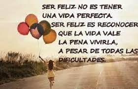
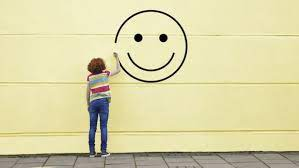

¿ES POSIBLE SER FELIZ?
Todos sabemos que es mucho más fácil morir que vivir, por eso cada día nos preguntamos qué hacemos para sentirnos bien, o poder llenar ese vació que tenemos en nuestro diario vivir. Con esto quiero plantear que como especies animales facultadas para razonar, pensar y ser conscientes de nuestra existencia nos vemos obligados a realizar acciones para llenar ese vació existencial.
En tal sentido, nos hemos preguntado ¿Por qué vivimos? ¿Cuál es el propósito de nuestra vida?, preguntas tan fáciles de formular, sin embargo, tienen cierto grado de dificulta de responder, dependiendo de su receptor, cada uno puede tener su propia teoría o quizás un propósito y es muy subjetivo, pero lo único que sabemos que es algo cierto, es que nosotros tenemos un propósito, y que ese propósito no puede ser nada, porque la nada no existe.
Bueno, ahora vamos a filosofar un rato con relación a la nada. Hay veces que nos preguntamos que estamos haciendo y respondemos que nada, o quizás ha pasado por nuestra mente responder eso, o creer que de verdad existe.
Vamos hacer un pequeño experimento, cierra los ojos por cierto lapsus temporal (30 segundos, si, no sigas leyendo…). Bueno ya que lo hiciste, puedes ver que no existe la nada, quizás cuando cerraste los ojos te llego un recuerdo y quizás viste chispas o unas pequeñas luces, o quizás todo negro con muchos puntos no específicos. Bueno a eso es lo que yo quiero llegar y es que no existe la nada, porque cuando piensas en ella y la buscas y dices – LA ENCONTRE- , ella ya no existe porque ya se convierte en algo, ¿pero como es posible que suceda esto?, nuestra vida se encuentra en la nada, porque antes de nacer no somos nada y cuando morimos tampoco, por eso el ser humano no puede pensar ni crear la nada porque somos seres vivos, y algo vivo no puede ser nada, tiene por ende que ser algo… solo nos queda pensar y divagar por nuestras mentes que es aquello.
Con todo esto quiero irme acercando al tema, el cual da mucho de qué hablar y es la felicidad. Pero en si ¿que entendemos por ella?, ¿es algo inherente al ser humano, o es solo una construcción social que se ha ido sosteniendo en el tiempo? Bueno no vamos a discutir sobre eso, lo que si sé y es que la felicidad es aquello que queremos tener todos los seres humanos, es como una utopía que queremos que sea realidad, y quizás en algunos momentos la alcancemos, pero sabemos que va a salir un nuevo problema, que nos impida estar al 100% felices, a esto lo llamo la anti-ética-moral(si, suena raro lo sé), sin embargo no es nada mas que una causa y debe de haber un efecto, si, este es la tristeza, no se si te ha pasado y es que cuando sentimos que todo lo que hemos hecho o estamos haciendo va a la perfección como nosotros lo queremos, ¿allá a lo último sale un problema?, es de los más feo que le puede pasar a uno porque nosotros metemos en nuestra mente que wao, va a ser genial el día o aquel proyecto, pero bueno sale un pequeño problema…
Si, así es la vida, llena de incertidumbres, por eso no todo lo que queremos va a salirnos bien, tenemos que esforzarnos mucho. Ser feliz también tiene que ver con las cosas que hacemos a diario, como el placer. Ser feliz, desde y en el pensamiento filosófico, ha sido una cuestión vinculada al problema moral, como hemos visto anteriormente en las clases y los videos foros, porque está ligada a las costumbres, al hacer, al vivir con otros. El filósofo se debate entre una propuesta hedonista y otra eudemonista, en la que el hombre busca la felicidad en el placer o encuentra la felicidad en el ejercicio de la virtud.
“La felicidad tiene que ver con el carácter del pacto social al que el hombre se sujeta; con las leyes que limitan el poder del gobernante, con la defensa de la propiedad privada y las libertades públicas.
¿Por qué los hombres que viven en completa libertad en el estado de naturaleza deciden resignarla para que otro los gobierne? El “miedo” es el motor del contrato en el que los ciudadanos delegan el poder a quien los organiza, los vigila, los castiga.”
El sujeto ya no encuentra redención en los templos y en las iglesias, se redime en los centros comerciales, en el consumo. Dime qué consumes y te diré quién eres. Dime qué puedes comprar y te diré qué tipo de felicidad puedes obtener. Las denominadas “patologías de consumo”, relacionadas con la dietética, síntomas tales como la anorexia y la bulimia, muestran en parte esta dificultad del proceso identitario en una sociedad de modo de producción capitalista. El hombre no encuentra en el mundo el resultado de su obra, de su acción; se encuentra enajenado y en esa “ajenidad” se busca en un espejo imaginario de sí mismo.
Aristóteles organiza su propuesta ética en torno al problema de la felicidad, su punto de partida es la convicción que para todos los hombres, en todos los oficios y ocupaciones, lo común es perseguir un fin; en el caso especial de la ética, ese fin que se pretende alcanzar es la felicidad.
Pero debe, entonces, dedicar una buena parte de su propuesta moral a la definición de ese fin, de ese bien, que denominamos “felicidad”. El hombre bueno para Aristóteles, el hombre feliz, es un virtuoso; y la virtud es posible si los seres humanos practican hábitos buenos.
En ese camino hacia la felicidad, Aristóteles describe en los términos de “una teoría del equilibrio”, el afán por evaluar con el auxilio del entendimiento la opción más correcta; esto es, el justo medio entre dos extremos.
El hombre feliz, es profundamente racional, prudente, reflexivo; alguien capaz de tomarse el tiempo necesario para medir las consecuencias de su acción. Antes de actuar debe aprender para decidir, para optar, para elegir lo bueno, lo correcto; sus armas son el logos (raciocinio) el ethos (conciencia moral) y el habitus (lo que se adquiere).
Actuar bien, moralmente bien, éticamente bien, es hacerlo teniendo en cuenta el “bien común “, el bien de todos; ya que somos animales racionales, sociales y políticos. Nuestra naturaleza nos provee de la posibilidad de pensar y actuar conforme a esa razón; pero es en la polis donde se adquieren los buenos hábitos de convivencia…
Para alcanzar la felicidad hay que practicar hábitos buenos, justos, equitativos; esos hábitos están sostenidos por actos voluntarios. Los hombres desean voluntariamente el bien común y por ende, persiguen la felicidad a sabiendas que ésta sólo se logra con esfuerzo, con el ánimo templado, con valor. En ese camino hacia la virtud, los seres humanos se dirigen hacia la felicidad. Nadie en su “sano juicio” puede actuar mal, ni prefiere la injusticia, el descontrol o la violencia.